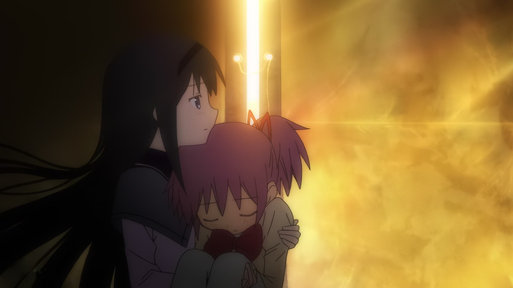

WINNOW · JEV × ANIME MAD
MAD Lab
从成千上万个镜头，实时、智能剪辑出情绪 MAD
前情提要
01 · 漫剧
一部在红果热播的漫剧， 全部由我们自己生成—— 成千上万个镜头。
角色、场景、情绪，全都散落在素材堆里。
02 · 宣发
宣发要剪几十条 热门音乐 + 快剪。
就是你在抖音刷到的、几十万赞的那种视频。
今天，每一条都靠人一遍遍地反复筛。
03 · 情绪
有了 Jev， 每一刀都挂在情绪上。
召回、Rerank 只找“像的”，不带任何上下文；
Jev 看着前一刀、看着故事走到哪，再决定这一刀。
04 · 产品
把素材交给 Jev， 按情绪和故事线，实时剪出来。
为什么要实时？找情绪是件高频的事——先快速试出对的那一版，再细调。
不是按热度拼素材的信息流工具，而是从内容出发，讲情绪、讲故事。
下面用《魔法少女小圆》4,575 个镜头，把这件事完整跑一遍 →
关注 推荐
♥0
@漫剧宣发
#漫剧 #卡点 #混剪
♪ 夜间巡航 DJ
#漫剧 #卡点 #混剪
♪ 夜间巡航 DJ
实验 · 用《魔法少女小圆》代替我们的漫剧素材
4,575 个镜头。 一句话，剪成一首歌。
为什么今天只能靠人反复筛 · 剪辑的真实工作量
0
次「要不要」
4,575 个镜头×~120 个拍点×6 个维度选材 · 原声 · 时长 · 转场 · 特效 · 滤镜
全部塞进大模型——
装不下，
也等不起。
配乐 · 夜间巡航 DJ52.17s · 13 个重音 · 每个重音都要重新问一遍
RAG · 召回 + RERANK
像不像
召回输入
乐句 3「承诺」· 焰下定决心，要守护小圆
乐句方向 + 最近两镜 + 音乐位置 → 全库向量 + 字幕 + 描述检索
召回下一个、再 Rerank——都不带上下文，
它不知道这里已经有三个哭脸了。
JEV · 带上下文的插入决策
放不放，怎么放
插入点 · 乐句 3「承诺」· 第 2 个重音
P(放入)0.00
- KEEP
- 保留 0.94
- AUDIO
- 仅人声
- TRANSITION
- 闪白切入
- FX
- 轻推 1.06×
- GRADE
- 冷调
- LENGTH
- 21 帧
六个维度，同一个插入点，同时落定。
不是召回 + Rerank， 是对每个镜头直接做决定。
多级剪枝 · 每一刀一轮
每一刀都回到全库，只把难题交给最合适的模型。
GEMINI情绪大纲听实际配乐，定乐句情绪与检索方向
全库 · 每刀重查4,4254,575 镜头去掉重复 OP/ED，全部有向量
RAG · 本刀临时召回96–384向量 + 字幕 + 描述；不留作下一刀的名单
JEV · 全部评分35–70合格候选不截断，逐个问：适合这个乐段吗？
JEV · 最终选择6–12 → 1真实裁剪窗口 + 前后镜 + 重音，定镜头与时长
时间轴
落一刀，状态更新，下一刀重新查全库。
* 数量取自当前选镜策略与实测（同乐段连续插入约 0.4–0.6 秒/镜）；星图落位为示意动画
为什么要实时 · 找情绪是一件高频的事
LLM大模型逐字生成 · 秒级一次0 次
JEVWinnow-12B8 路并行 · 前缀缓存 · 只读概率0 次
88ms单次决策 · 中位延迟 *
- 0token不写文字，直接读选项概率
- 8路分支并行，共享同一段上下文
- ≈0元本机 12B，可以奢侈地反复问
大模型是导演，一首歌开一次会； Jev 是剪辑师的手感，每个拍点问上千遍。
拿得准就直接落刀；拿不准，才升级回大模型重新规划。
* 本机 RTX 5090 · Winnow-12B 决策接口实测中位数，不含检索、解码与渲染；大模型节奏为示意
有了 Jev 级的决策， 剪辑从一次性生成， 变成持续发生的决策。
改一句想法，只重决受影响的那一段乐句。
回到我们的漫剧 · 一句话一条宣发
NEXT看成片，拆解每一刀→
宣发 01燃 · 对峙到爆发
宣发 02虐 · 一次次重来

宣发 03暖 · 带她回家WINNOW MAD LABJEV × ANIME MAD
01/ 11千镜
00:00:00:00
SPACE 播放 / 暂停 · ← → 切幕 · N 讲稿 · F 全屏